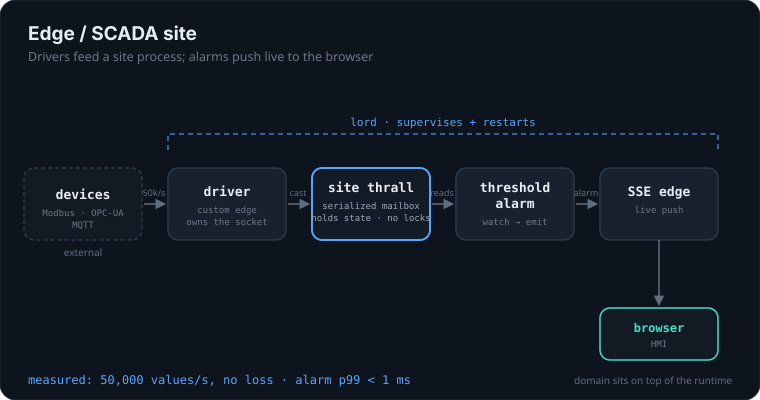

3 SDKs
Go, TypeScript, Python. One wire contract, indistinguishable to the lord.
aether is a polyglot, OTP-inspired runtime over NATS. A lord starts your programs as isolated OS processes, watches them, restarts them when they crash, and lets them talk over a message bus. One crash does not sink the rest. No Erlang, no sidecar, no Kubernetes.
A supervisor and its genservers, here over NATS and across languages. The names carry the flavor; the model is plain supervision and message passing.
Spawns thralls as OS processes, watches them, restarts them per a strategy you choose, drains them on shutdown.
State plus a serialized mailbox, so no locks. Also comes as an FSM (gen_statem) and an event manager (gen_event).
Embedded NATS or an external cluster. Sync call, fire-and-forget cast, optional durable delivery.
Not millions of tiny in-VM actors (reach for BEAM there). aether earns its keep once you have several processes that must be supervised, isolated, and reliably connected.

Protocol drivers feed a coarse-grained site process on a serialized mailbox; threshold alarms push live to a browser over SSE. The runtime is proven by the spike; the domain sits on top.
One lord plus thralls in Go, TS and Python side by side, over call and cast. Want a pool? replicas = N load-balances through a NATS queue group for free.
Each site is a leaf node bound to its own account: a hard, structural boundary, not careful code. The hub still assembles a fleet-wide health view. Partition-tolerant by design.
Durable thralls (casts survive a crash via JetStream) plus a worker pool plus an event log: state is rebuilt by replaying the log, not from a snapshot. The log is truth.
Write the same tiny genserver in any of the three languages. Durability, replicas and supervision policy are manifest concerns, not code.
import { defThrall, start } from "@hamicek/aether"; const counter = defThrall<number>({ name: process.env.AETHER_NAME ?? "counter", init: () => 0, handleCall: { get: (_p, s) => [s, s] }, // [reply, newState] handleCast: { inc: (_p, s) => s + 1, dec: (_p, s) => s - 1 }, terminate: (reason, s) => console.log(`exiting ${reason}, last=${s}`), }); await start(counter);
# start the ether + the lord from a manifest $ aether up -f aether.toml # status of every thrall, from the registry $ aether ps # the live lifecycle stream $ aether events # poke a thrall by hand $ aether cast counter inc $ aether call counter get => 3
The same thrall exists in counter_py.py and counter_go.go, functionally identical. Turn on durability with durable = true in the manifest. Let a handler crash cleanly with escalate("...") and the lord restarts it through init.
OTP-style supervision and polyglot messaging over real OS processes. Runnable examples for every shape live in the repo.